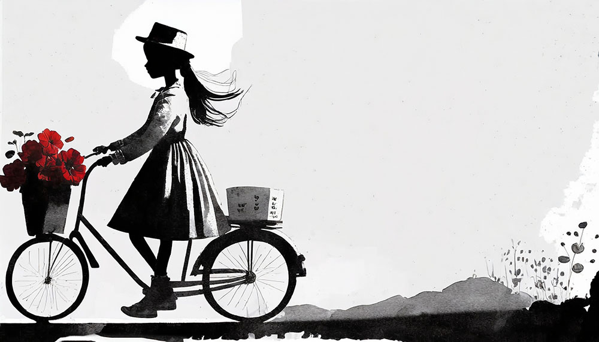
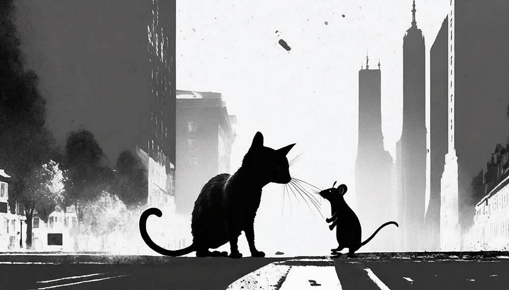

Project
This website is part of an assignment in web-development at Högskolan Kristianstad.
Image assets generated by firefly inspired by a Banksy exhibition.

Experiences
M.Sc Industrial Economy and Management with 15 years in telecom and IT.

Interests
Arts and photography
Sailing